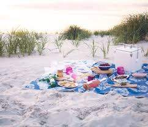
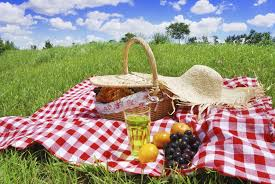
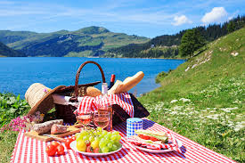
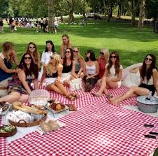
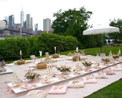
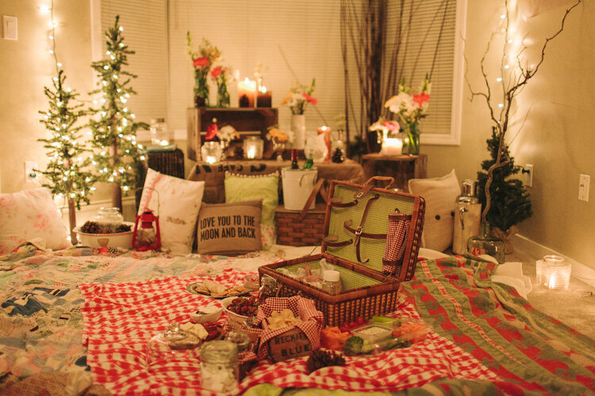

Most popular options:
Beach, river, national park, botanical garden, urban rooftop, grassy pasture, hilltop or even your own backyard – one of the best things about picnics is you can have them in almost any outdoor setting...even indoors if it's a rainy day!!
     